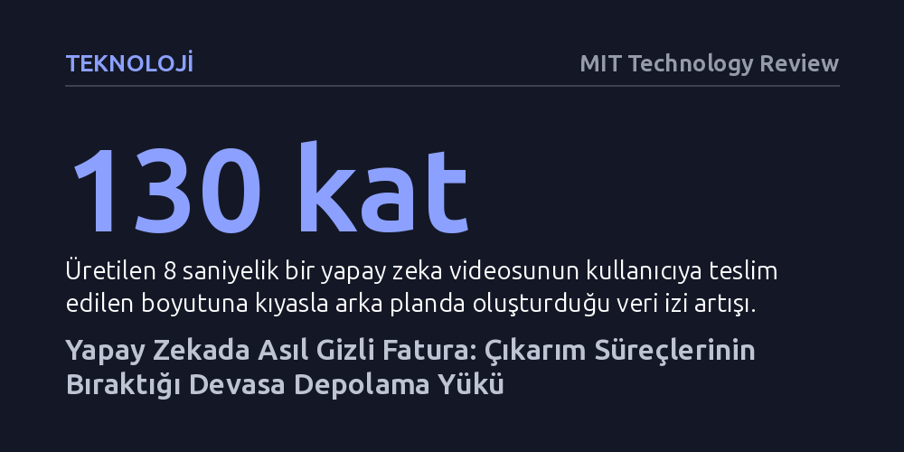

TEKNOLOJI · MIT Technology Review · 2026-10-23
Yapay zeka bütçeleri işlemcilere odaklanırken, çıkarım iş yüklerinin arka planda bıraktığı devasa veri yığını depolama maliyetlerini hızla katlıyor. Örneğin üretilen sekiz saniyelik bir videonun arka plandaki veri izi, kullanıcıya teslim edilen dosya boyutunun 130 katına ulaşıyor.
Yapay zeka altyapı maliyetlerinin yalnızca pahalı GPU çiplerinden ibaret olmadığını, asıl bütçe krizinin biriken ve silinmeyen çıkarım verilerinden kaynaklanacağını gösteriyor.

Yapay zeka yatırımlarından bahsedildiğinde teknoloji liderlerinin ve yöneticilerin aklına ilk olarak devasa veri merkezlerini dolduran grafik işlemciler (GPU), gigavatlarca elektrik tüketen sunucu kabinleri ve çip tedarik kuyrukları geliyor. Donanım maliyetleri planlanırken tüm dikkatin işlem gücüne yoğunlaşması anlaşılır bir durum; zira modelleri çalıştırmak için gereken hızlandırıcı donanımlar son derece pahalı. Ancak bu odaklanma, yapay zeka operasyonlarının hayata geçmesiyle birlikte sessizce büyüyen ve yönetilmesi en zor altyapı kalemlerinden birini gözden kaçırıyor: veri depolama maliyetleri.
Geleneksel yapay zeka projelerinde altyapı hesapları daima modellerin eğitilme sürecine göre şekillendiriliyordu. Eğitim süreci belirli bir başlangıcı ve bitişi olan, hesaplama kaynaklarını tüketip tamamlanan bir proje niteliğindedir; bu nedenle bütçelenmesi ve sonlandırılması nispeten kolaydır. Oysa bugün üretken yapay zekanın yaygınlaşmasıyla ağırlık merkezi model eğitiminden çıkarım (inference) aşamasına, yani kullanıcıların her gün sisteme ilettiği milyarlarca komut ve sorguya yanıt üretme evresine kaydı. Çıkarım iş yükleri kesintisiz çalışır ve eğitimden farklı olarak her işlem arkasında kalıcı bir veri izi bırakır.
Kullanıcıların yapay zeka modellerinden aldığı çıktılar genellikle birkaç megabaytlık bir metin, görsel ya da kısa bir videodan ibarettir. Ne var ki madalyonun diğer yüzünde, sistemin arka planında biriken veri hacmi bu görünür çıktının katbekat ötesine geçiyor. Western Digital'in şirket içi ölçümleri bu dengesizliği açıkça ortaya koyuyor: Kullanıcıya yalnızca 3,97 megabayt boyutunda 720p çözünürlüklü 8 saniyelik bir video üretildiğinde; işlem kayıtları, önbelleğe alınan bağlamlar, ara işlem görüntüleri, sistem yedekleri ve güvenlik kayıtları nedeniyle arka planda 500 megabaytın üzerinde veri kalıyor.
Bu tablo, kullanıcının gördüğü dosya boyutunun tam 130 katı kadar ek verinin sistemde kalıcılaşması anlamına geliyor. Bu durum kurumsal ölçekte daha uzun ve yüksek çözünürlüklü videolar üreten şirketler düşünüldüğünde, tek bir klip başına yüzlerce gigabaytlık devasa bir arka plan veri yükü yaratıyor. Üstelik çıkarım iş yüklerine olan talep patlama yaşıyor; McKinsey projeksiyonlarına göre çıkarım talebi 2030 yılına kadar yıllık bileşik %35 oranında büyüyecek ve on yılın sonuna gelindiğinde veri merkezlerindeki toplam talebin %40'ından fazlasını oluşturacak.
Yapay zeka harcamalarını planlarken yapılan en kritik hata, depolamayı işlem gücü bütçesinin yanındaki küçük bir yuvarlama farkı olarak görmektir. Bir perakendeci ürün kataloğu için yapay zekayla tanıtım videoları ürettiğinde ya da bir sigorta şirketi hasar belgelerini işlediğinde, işlem maliyeti sorgu başına öngörülebilir bir harcama kalemi sunar. Ancak depolama maliyeti doğrusal değil, kümülatif olarak katlanır; çünkü arka planda üretilen verilerin hiçbiri işlem bittiğinde silinmez ve her yeni sorgu bir öncekinin üzerine eklenir.
Daha da önemlisi, depolama darboğazı doğrudan pahalı işlemcilerin verimliliğini baltalıyor. Büyük bir bulut hizmet sağlayıcısının ürün yöneticisi bu durumu şu sözlerle özetliyor: "Daha fazla depolamaya sahip olmayı, GPU'ları sürekli meşgul tutmanın bir optimizasyonu olarak düşünebilirsiniz." Verinin modele zamanında aktarılamaması yüzünden GPU'ların boşta beklemesi, saatlik maliyeti son derece yüksek olan işlemci kaynaklarının israf edilmesine yol açıyor. Yapılan araştırmalarda yöneticilerin yaklaşık %61'i kurumsal veri hacimlerinin son bir yılda en az %25 arttığını bildiriyor. Depolama harcamaları her yıl %25 büyürken işlemci bütçesi döngüsel kaldığında, başlangıçta önemsenmeyen depolama kalemi 12 ila 18 ay içinde bütçenin en baskın harcaması haline gelebiliyor.
Bu açmazı aşmak, depolama altyapısını yapay zeka verisinin tüm yaşam döngüsüne uyarlamaktan geçiyor. Şirketler genellikle depolama stratejilerini anlık ve sürekli erişilen veriler için tasarlanmış yüksek maliyetli "sıcak" katmanlar üzerine kuruyor; oysa yapay zeka verisinin büyük çoğunluğu arka plandaki ılık ve soğuk katmanlarda birikiyor. RAG (Retrieval-Augmented Generation) gibi modern mimariler, eskiden arşivlere kaldırılıp unutulan verileri yeniden çıkarım süreçlerinin aktif girdisi haline getiriyor. Nitekim IT liderlerinin %96'sı çıkarım ve RAG iş yüklerini desteklemek için arşivlerden çok daha hızlı veri çekebilecek sistemlere ihtiyaç duyacağını öngörüyor.
Kurumların depolama kararlarını tek tek sürücüler üzerinden değil, tüm filo genelinde enerji tüketimi, güvenilirlik, yoğunluk ve toplam sahip olma maliyetini dengeleyen katmanlı bir mimariyle ele alması gerekiyor. Liderlerin önümüzdeki bütçe dönemine girmeden önce şu üç temel soruyu yanıtlaması kritik önem taşıyor: Yapay zeka ile üretilen içerikler için belirlenmiş net bir saklama politikamız var mı? Depolama alımlarımız model eğitiminin performans ihtiyaçlarına mı yoksa ürettiğimiz verinin gerçek yaşam döngüsüne mi bağlı? Ve yapay zeka kullanımımız gelecek yıl iki katına çıkarsa, depolama maliyetimiz doğrusal mı artacak yoksa kontrolsüz biçimde katlanacak mı?